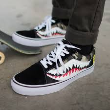

In my opinion, shoes are one of the major parts in having a good outfit, with the right pair of shoes, you can make any outfit look good.
The picture below is a pair of the Yeezy Blue Tint v2, designed by Kanye West. I think that Kanye West has made a great pair of shoes because not only do they look original, but he has managed to allow his shoes to be worth a lot more than he sells them for. For example, the shoes in the photo were sold at the retail price of $220, but since Kanye West has released only a limited amount of the shoe, people will then need to purchase the pair of shoes off of someone who did buy them, and the resale value of the shoes can go up to $600! The Blue Tint Yeezys are one of my personal favorites, not only because of the unique design and cool colorway, but also because I managed to buy a pair of these shoes after waiting in an online waiting screen for 2 hours. Below will be photos of all the other shoes that I will be talking about because they will not load on my other pages for some reason, I tried multiple things in order to fix it but nothing seemed to work.  NMDs
Vans
Gucci Slides
NMDs
Vans
Gucci Slides